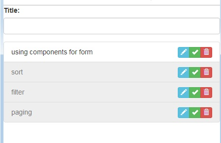
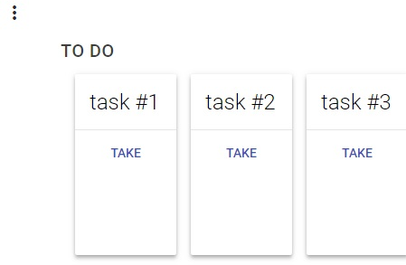
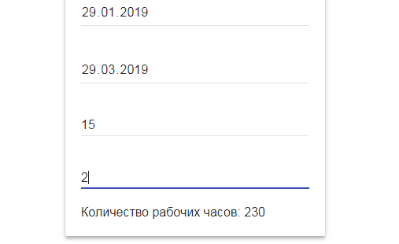
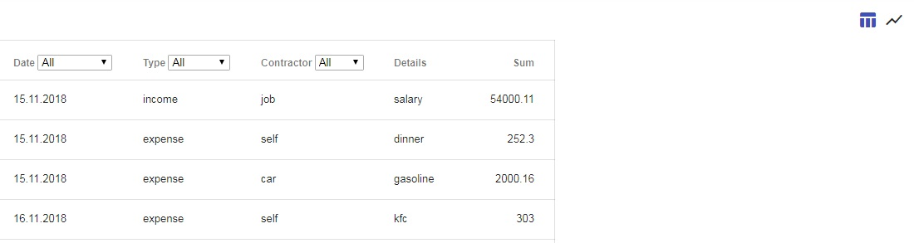

Tasks list
It's the simple list of tasks with standard features: add a new one, edit existing, delete existing.

Tasks board
It's a task board with 3 areas: "to do", "in progress", "done"; and you can take task to do it and finish task which is in work.

Work hours calc
Here you can calculate the number of working hours for a period of time, taking into account pre-holiday days.

Budget planning
Here you can add expenses, incomes, filters them and see the expense chart.